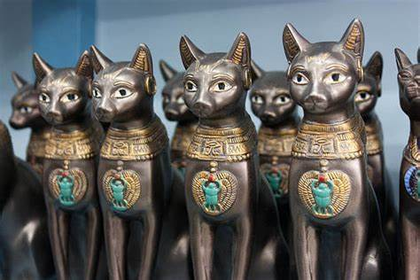
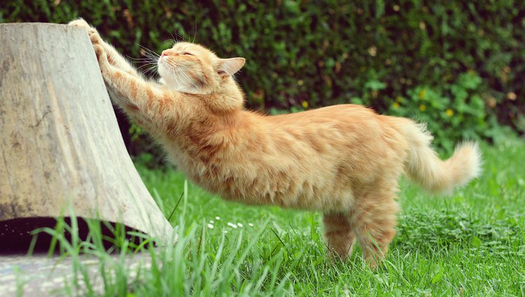

Datos curiosos
Los gatos son criaturas fascinantes con muchas características y comportamientos únicos

Historia
Se cree que los gatos fueron domesticados por primera vez en el antiguo Egipto hace más de 4,000 años. Eran venerados y considerados símbolos de gracia y protección.
Comunicación
Los gatos tienen un vocabulario extenso, y pueden hacer más de 100 sonidos diferentes. Los perros, en comparación, pueden hacer alrededor de 10.

Habilidades
Los gatos tienen una visión nocturna excepcional y pueden ver en niveles de luz seis veces más bajos que los humanos. Además, su sentido del oído es muy agudo, y pueden escuchar frecuencias ultrasonicas que están fuera del rango de audición humano. Además pueden correr hasta 48 kilómetros por hora y pueden saltar hasta seis veces la longitud de su cuerpo en un solo salto.